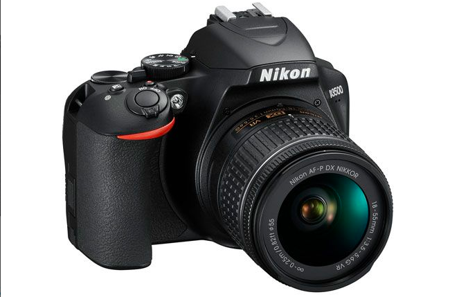

Capture Moments
KRYEFAQJA
LAJME
GALLERY
KAMERA
JETË
KONTAKT
Kamera me e mire per vitin 2021
Price:
$90.99
Nxënësit: Kjo kategori është për njerëzit që sapo kanë filluar fotografinë, por që duan të mësojnë më shumë. Ne kemi përfshirë kamera që janë të përballueshme për tu blerë, por të avancuara mjaftueshëm për të vazhduar me zhvillimin e aftësive tuaja.
Përmirësuesit e entuziastit: Ndoshta tashmë keni një aparat fotografik dhe po kërkoni një më të mirë? Ashtu si me të gjitha këto kategori, ne kemi një udhëzues të dedikuar për këtë, por ne zgjedhim tre nga të preferuarit tanë këtu.
Udhëtim dhe vlogging: Udhëtimi nëpër botë është një ëndërr për shumicën prej nesh, dhe këto janë kamera që janë krijuar për të kapur gjithçka që shohim, pavarësisht nëse ka ende fotografi për tu varur në mur apo video për të postuar në mediat tona sociale.
Pika dhe gjuaj: Jo të gjithë duan të bëhen ekspert. Ndonjëherë ju thjesht dëshironi një pikë të thjeshtë dhe shkrepni kamerën që bën gjithçka automatikisht. Këtu keni një përzgjedhje të kamerave të përballueshme që e gjithë familja mund të përdorë.

Kamera me e mire per vitin 2021
Price:
$100.99
Nxënësit: Kjo kategori është për njerëzit që sapo kanë filluar fotografinë, por që duan të mësojnë më shumë. Ne kemi përfshirë kamera që janë të përballueshme për tu blerë, por të avancuara mjaftueshëm për të vazhduar me zhvillimin e aftësive tuaja.
Përmirësuesit e entuziastit: Ndoshta tashmë keni një aparat fotografik dhe po kërkoni një më të mirë? Ashtu si me të gjitha këto kategori, ne kemi një udhëzues të dedikuar për këtë, por ne zgjedhim tre nga të preferuarit tanë këtu.
Udhëtim dhe vlogging: Udhëtimi nëpër botë është një ëndërr për shumicën prej nesh, dhe këto janë kamera që janë krijuar për të kapur gjithçka që shohim, pavarësisht nëse ka ende fotografi për tu varur në mur apo video për të postuar në mediat tona sociale.
Pika dhe gjuaj: Jo të gjithë duan të bëhen ekspert. Ndonjëherë ju thjesht dëshironi një pikë të thjeshtë dhe shkrepni kamerën që bën gjithçka automatikisht. Këtu keni një përzgjedhje të kamerave të përballueshme që e gjithë familja mund të përdorë.